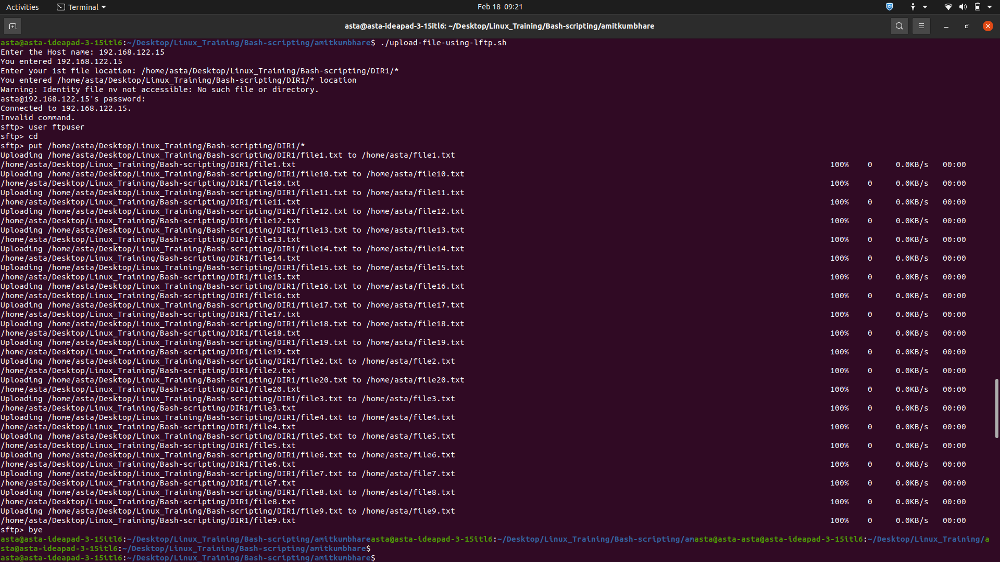

This bash script prompts the user for a host name, user credentials, and the location of a file to transfer via SFTP. It then uploads the specified file to the specified location on the remote host using the SFTP protocol.
#***************REMOVE THIS IS COMMENT LINE*********************#
#!/bin/bash
read -p "Enter the Host name: " HOST #example "192.168.122.132"
echo "You entered $HOST"
USER="ftpuser"
PASSWORD=""
DESTINATION=$1
read -p "Enter your 1st file location: " ALL_FILES #example "DIR1/*"
echo "You entered $ALL_FILES location"
sftp -inv $HOST <<EOF
user $USER $PASSWORD
cd $DESTINATION
put $ALL_FILES
bye
EOF
#***************REMOVE THIS IS COMMENT LINE*********************#
The output of the script is displayed in the terminal.
To use this script, save it as a .sh file and make it executable using the chmod command. Then, run the script with the destination directory as the first command-line argument.
For example, if the script is saved as "upload_script.sh" and the destination directory is "/home/ftpuser/upload/", you would run the script as follows:
./upload_script.sh /home/ftpuser/upload/The script will prompt you for the host name, the location of the file to transfer, and the password for the user account on the remote host.